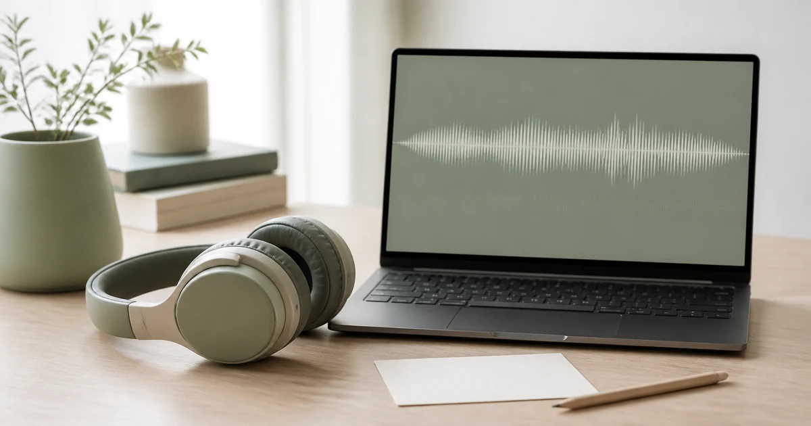
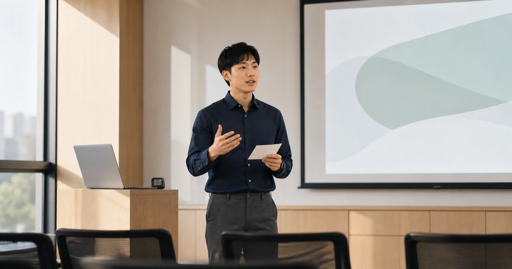
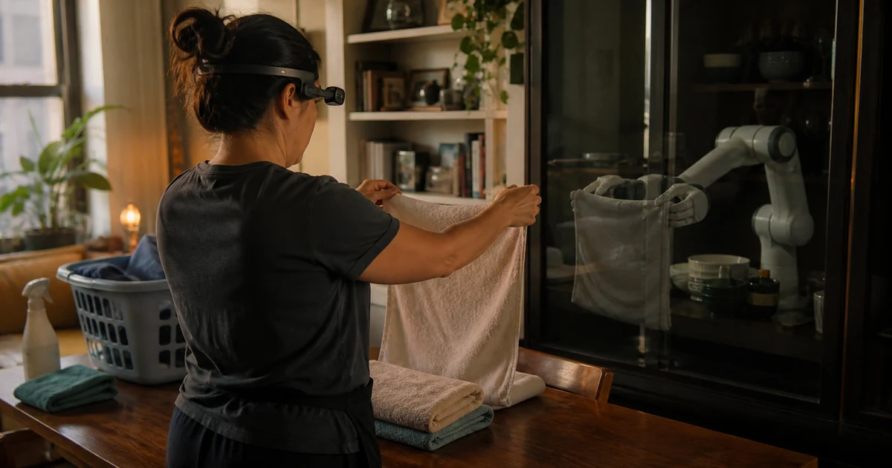
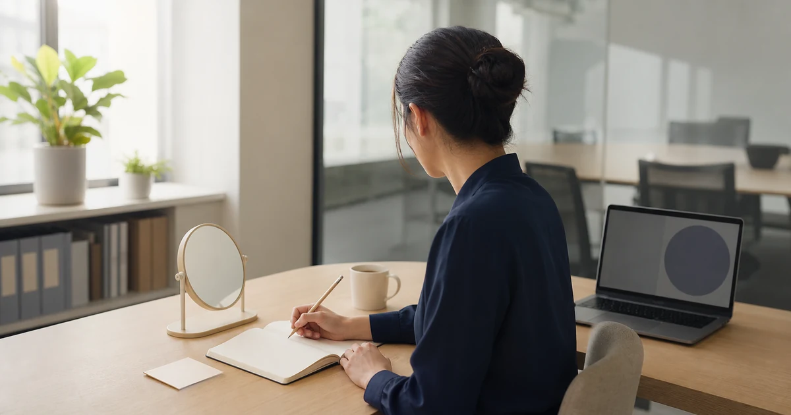
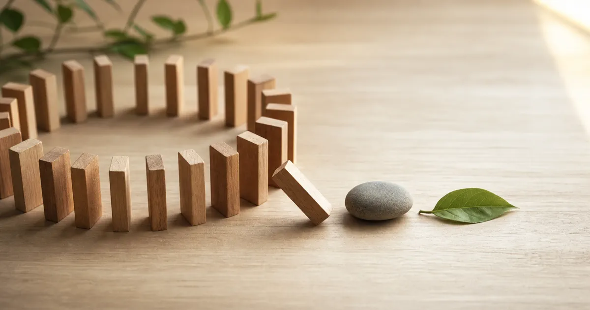

유가·금리 다시 뛴 밤, 메모리주는 버텼다
유가·미국 장기금리 상승과 Micron·DRAM 현물 강세가 맞선 오늘의 KOSPI·KODEX 기준선을 봅니다.
Essays · Markets · Health
기능 설명을 넘어 사람과 사회, 시장과 몸에 관한 긴 글을 기록합니다. 글의 성격에 따라 의견, 기준 시각, 정보의 한계를 구분하고 발행일이 가장 최근인 글부터 배치합니다.
발행일 기준 최신순
유가·미국 장기금리 상승과 Micron·DRAM 현물 강세가 맞선 오늘의 KOSPI·KODEX 기준선을 봅니다.

대규모 자사주 소각 공시와 미국 반도체 약세가 맞선 오늘의 KOSPI·KODEX 기준선을 봅니다.

미국 반도체 급락과 국내 메모리 장전 약세 뒤 KOSPI·KODEX 기준선을 봅니다.

Micron·NXT 강세와 유가·금리 부담이 맞선 오늘의 KOSPI·KODEX 기준선을 봅니다.

외국인 3조원 순매수와 메모리 강세가 만든 급등을 결산하고 다음 주 7,000선의 성립 조건을 봅니다.

전날 급등과 EWY 후행 반영을 다시 더하지 않고 6,896 돌파의 외국인 수급을 봅니다.
천식 시험에서는 가짜 흡입기 뒤에도 숨이 편해졌지만 폐 기능은 실제 약을 썼을 때만 뚜렷하게 좋아졌습니다. 느낀 변화와 치료 효과가 왜 다른지 짚습니다.

전날 급등을 중복 계산하지 않고 외국인 수급과 6,668 돌파 여부를 봅니다.

불 꺼진 한반도의 북쪽을 밝힐 전력망에 한국의 설계와 운영 능력이 닿을 수 있을까. 병원과 물 펌프에서 시작하는 길을 그려 봅니다.
짧은 답장 하나가 관계의 끝처럼 느껴질 때, 확인된 사실·떠오른 생각·감정을 나눕니다. 근거를 살펴 지금 믿을 수 있는 문장과 다음 행동을 정합니다.

최면 중 행동이 저절로 일어난 듯 느껴져도 판단과 거부 능력은 남습니다. 통증·장 증상에는 보조 효과가 관찰됐지만 기억을 정확히 되살리는 도구로는 위험합니다.

바로 다음 단어에 나타나는 짧은 프라이밍과 몇 주간 음원을 들은 뒤의 기억력·자존감 변화는 다른 주장입니다. 느낌과 생활 속 결과를 나눠 확인합니다.

결과를 떠올리는 상상과 실제 행동을 미리 연습하는 시각화는 다릅니다. 시작·장애물·대응 행동을 그린 뒤 곧바로 몸으로 확인합니다.

무료 청소와 로봇 학습이 한 집 안에서 만났습니다. 인간의 숙련이 데이터 자산이 되는 순간과 반복 사용의 몫을 들여다봅니다.

Super Micro·CoreWeave·Lumentum 실적과 전일 국내 수급, 유가와 오늘 밤 CPI를 함께 읽습니다.

유가·미국 장기금리 상승과 반도체 급락이 한국 대형 반도체로 번졌습니다. 외국인 현물 매수와 프로그램 매도의 충돌을 읽습니다.

미국 고용 감소로 장기금리가 내려가고 반도체가 반등했습니다. 금요일 국내 수급 역전과 이번 주 CPI가 반등의 지속성을 가릅니다.
보유세 감면은 현재 집주인의 세 부담을 낮추지만, 집값에 반영되면 다음 매수자의 대출 부담을 키울 수 있습니다. 이 과정이 소비와 내수에 미치는 영향을 짚습니다.

전일 급락 뒤 외국인 현물과 프로그램 순매수가 돌아왔습니다. 유가·미국 금리 상승과 오늘 밤 고용보고서가 반등의 상단을 가릅니다.

전날 급반등한 KOSPI가 외국인·비차익 프로그램 매도와 대형 반도체 급락에 밀렸습니다. 강한 메모리 수요와 주식 수급의 엇갈림을 읽습니다.

미국 반도체 급등과 유가·금리 하락 뒤 한국 반도체가 강하게 출발했습니다. AMD의 시간외 급락과 국내 수급 전환을 함께 점검합니다.

미국발 안도 랠리에도 기관 매도에 갭상승을 반납했습니다. 반도체 약세와 코스닥 5% 급등, 외국인 현물·선물의 엇갈린 흐름을 읽습니다.

원화와 유가가 안정됐는데도 외국인·비차익 매도가 삼성전자·SK하이닉스에 집중된 이유를 상승하는 DRAM 가격과 함께 읽습니다.

긍정 문장 반복과 심리학의 자기확언은 출발점이 다릅니다. 중요한 가치와 실제 경험을 떠올려 다음 행동을 시작할 작은 여유로 잇습니다.
21일과 66일은 모두에게 적용되는 완성일이 아닙니다. 점심 뒤 실제로 걸은 횟수와 걷기 시작이 얼마나 쉬워졌는지를 따로 확인합니다.

Situational Awareness의 상장주식 포트폴리오 매각을 통해, 포지션과 시간표가 함께 노출될 때 생기는 금융시장의 비대칭을 들여다봅니다.
대형 AI 상장주식 포트폴리오의 Citadel 매각과 삼성전자의 데이터센터 고객 5곳 장기계약을 수급과 공급 부족으로 나눠 읽습니다.

Microsoft의 강한 클라우드 성장, FOMC의 금리 경계, 엇갈린 삼성전자·SK하이닉스와 메모리 가격의 온도차를 읽습니다.

AI 기업의 투자·용량 계약·유료 매출을 세 장부로 나눠, 거대한 인프라 투자가 마지막 고객의 반복 결제에서 어떻게 검증되는지 살펴봅니다.

외국인·기관·프로그램 순매수에도 반등을 지키지 못한 이유를 SK하이닉스 실적, 코스닥 시장 폭, 환율과 메모리 수급으로 나눠 읽습니다.

성공담에서 고른 습관을 일주일 동안 직접 해봅니다. 실제 수강 횟수와 완료한 단원을 확인해 생활과 맞지 않은 시간이나 분량 하나를 고칩니다.

코스피가 7%대 급락한 오전, 미국 반도체 약세와 중국 경쟁 우려가 외국인·프로그램 매도와 맞물린 흐름을 분석합니다.

‘잠재의식 해킹’으로 바꿀 수 있는 것은 특정 상황에서 자동으로 이어지는 생각과 행동입니다. 휴대전화 반응을 기록하면 다른 행동을 고를 순간을 찾을 수 있습니다.

미국 빅테크와의 장기 파트너십에도 코스피가 장 초반 상승분을 반납한 이유, 반도체와 코스닥·인터넷의 온도차, 이번 주 핵심 일정을 짚습니다.
누구보다 연결돼 있지만 서로에게 다가가지 못하는 세대. 욕망이 사라진 것이 아니라 관계가 감당해야 할 위험과 비용이 커졌다는 관점에서 Z세대의 ‘섹스 불황’을 들여다봅니다.
이 카테고리에 발행된 글이 아직 없습니다.